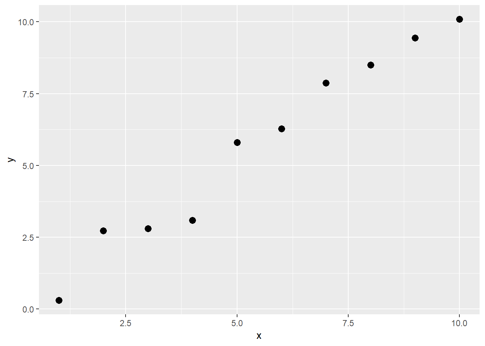
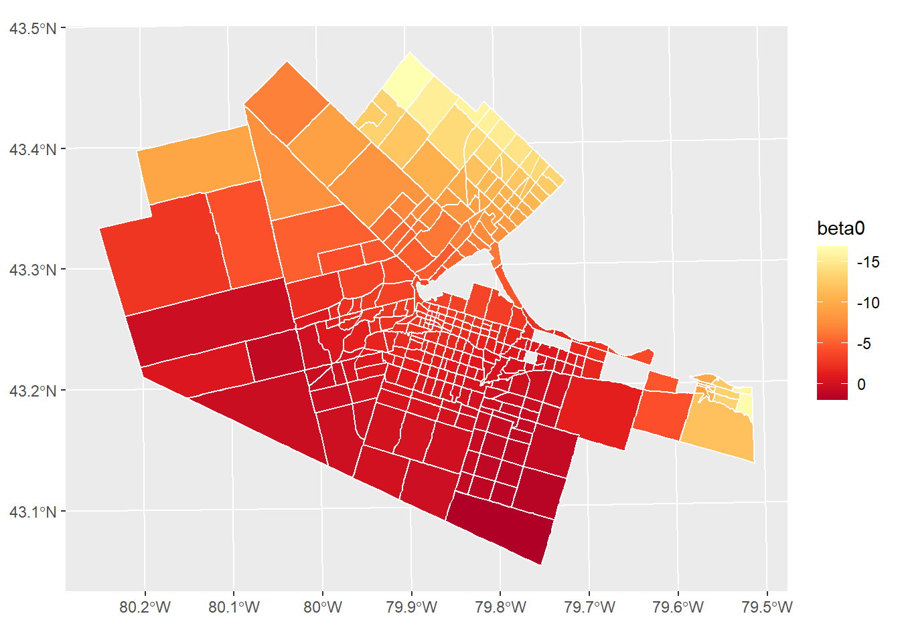

Chapter 29 Area Data VI
NOTE: You can download the source files for this book from here. The source files are in the format of R Notebooks. Notebooks are pretty neat, because the allow you execute code within the notebook, so that you can work interactively with the notes.
In the previous chapter, you learned about how to use local spatial statistics for exploratory spatial data analysis.
If you wish to work interactively with this chapter you will need the following:
An R markdown notebook version of this document (the source file).
A package called
geog4ga3.
NOTE: This is an R Markdown Notebook. When you execute code within the notebook, the results appear beneath the code.
In previous practice/session, you learned about how to use local spatial statistics for exploratory spatial data analysis.
For this practice you will need the following:
- This R markdown notebook.
- A shape file called “Hamilton CMA tts06”
The shape file includes spatial information for Traffic Analysis Zones (TAZ) in the Hamilton Census Metropolitan Area (as polygons).
29.1 Learning Objectives
In this practice, you will:
- Revisit the notion of autocorrelation as a model diagnostic.
- Remedial action.
- Flexible functional forms and models with spatially-varying coefficients. 3.1 Trend surface analysis. 3.2 The expansion method. 3.3 Geographically weighted regression (GWR).
- Spatial error model (SEM).
29.2 Suggested Readings
- Bailey TC and Gatrell AC (1995) Interactive Spatial Data Analysis, Chapter 7. Longman: Essex.
- Bivand RS, Pebesma E, and Gomez-Rubio V (2008) Applied Spatial Data Analysis with R, Chapter 9. Springer: New York.
- Brunsdon C and Comber L (2015) An Introduction to R for Spatial Analysis and Mapping, Chapter 7. Sage: Los Angeles.
- O’Sullivan D and Unwin D (2010) Geographic Information Analysis, 2nd Edition, Chapter 7. John Wiley & Sons: New Jersey.
29.3 Preliminaries
As usual, it is good practice to clear the working space to make sure that you do not have extraneous items there when you begin your work. The command in R to clear the workspace is rm (for “remove”), followed by a list of items to be removed. To clear the workspace from all objects, do the following:
rm(list = ls())Note that ls() lists all objects currently on the worspace.
Load the libraries you will use in this activity:
library(tidyverse)## -- Attaching packages ----------------------------------------------------------------- tidyverse 1.2.1 --## v ggplot2 3.1.0 v purrr 0.2.5
## v tibble 2.0.1 v dplyr 0.7.8
## v tidyr 0.8.2 v stringr 1.3.1
## v readr 1.3.1 v forcats 0.3.0## -- Conflicts -------------------------------------------------------------------- tidyverse_conflicts() --
## x dplyr::filter() masks stats::filter()
## x dplyr::lag() masks stats::lag()library(sf)## Linking to GEOS 3.6.1, GDAL 2.2.3, PROJ 4.9.3#library(broom)
library(spdep)## Loading required package: sp## Loading required package: Matrix##
## Attaching package: 'Matrix'## The following object is masked from 'package:tidyr':
##
## expand## Loading required package: spData## To access larger datasets in this package, install the spDataLarge
## package with: `install.packages('spDataLarge',
## repos='https://nowosad.github.io/drat/', type='source')`#library(reshape2)
library(plotly)##
## Attaching package: 'plotly'## The following object is masked from 'package:ggplot2':
##
## last_plot## The following object is masked from 'package:stats':
##
## filter## The following object is masked from 'package:graphics':
##
## layoutlibrary(knitr)
library(kableExtra)
library(spgwr)## NOTE: This package does not constitute approval of GWR
## as a method of spatial analysis; see example(gwr)library(geog4ga3)Begin by loading the data needed for this chapter:
data("HamiltonDAs")The file is of the Dissemination Areas in the Hamilton CMA, in Canada.
29.4 Residual spatial autocorrelation revisited
Previously you learned about the use of Moran’s I coefficient as a diagnostic in regression analysis.
Residual spatial autocorrelation is a symptom of a model that has not been properly specified. There are two reasons for this that are of interest:
- The functional form is incorrect.
- The model failed to include relevant variables.
Lets explore these in turn.
29.4.1 Incorrect Functional Form
To illustrate this, we will simulate a spatial process as follows: \[ z = f(x,y) = exp(\beta_0)exp(\beta_1x)exp(\beta_2y) + \epsilon_i \]
Clearly, this is a non-linear spatial process.
The simulation is as follows, with a random term with a mean of zero and standard deviation of 1. The random terms are independent by design:
set.seed(10)
b0 = 1
b1 = 2
b2 = 4
xy_coords <- st_coordinates(st_centroid(HamiltonDAs))## Warning in st_centroid.sf(HamiltonDAs): st_centroid assumes attributes are
## constant over geometries of xHamiltonDAs <- mutate(HamiltonDAs,
x = (xy_coords[,1] - min(xy_coords[,1]))/100000,
y = (xy_coords[,2] - min(xy_coords[,2]))/100000,
z = exp(b0) * exp(b1 * x) * exp(b2 * y) +
rnorm(n = 297, mean = 0, sd = 1))This is the summary of the simulated variables:
summary(HamiltonDAs[, 8:10])## x y z geometry
## Min. :0.0000 Min. :0.0000 Min. : 3.919 MULTIPOLYGON :297
## 1st Qu.:0.2284 1st Qu.:0.1354 1st Qu.: 7.842 epsg:26917 : 0
## Median :0.2695 Median :0.1712 Median : 9.370 +proj=utm ...: 0
## Mean :0.2724 Mean :0.1863 Mean :10.370
## 3rd Qu.:0.3127 3rd Qu.:0.2195 3rd Qu.:11.710
## Max. :0.5312 Max. :0.4079 Max. :22.809Suppose that we estimate the model as a linear regression that does not correctly capture the non-linearity. The model would be as follows:
model1 <- lm(formula = z ~ x + y, data = HamiltonDAs)
summary(model1)##
## Call:
## lm(formula = z ~ x + y, data = HamiltonDAs)
##
## Residuals:
## Min 1Q Median 3Q Max
## -2.7267 -0.8591 0.0028 0.8250 3.5826
##
## Coefficients:
## Estimate Std. Error t value Pr(>|t|)
## (Intercept) -3.6765 0.3255 -11.29 <2e-16 ***
## x 20.9207 0.8586 24.37 <2e-16 ***
## y 44.8033 0.9305 48.15 <2e-16 ***
## ---
## Signif. codes: 0 '***' 0.001 '**' 0.01 '*' 0.05 '.' 0.1 ' ' 1
##
## Residual standard error: 1.231 on 294 degrees of freedom
## Multiple R-squared: 0.8965, Adjusted R-squared: 0.8958
## F-statistic: 1273 on 2 and 294 DF, p-value: < 2.2e-16At first glance, the model gives the impression of a very good fit: all coefficients are significant, and the coefficient of multiple determination \(R^2\) is moderately high.
At this point, it is important to examine the residuals to verify that they are independent. Lets add the residuals of this model to your dataframes:
HamiltonDAs$model1.e <- model1$residualsA map of the residuals can help examine their spatial pattern:
plot_ly(HamiltonDAs) %>%
add_sf(color = ~(model1.e > 0), colors = c("red", "dodgerblue4"))To test the residuals for spatial autocorrelation we first create a set of spatial weights:
HamiltonDAs.w <- nb2listw(poly2nb(as(HamiltonDAs, "Spatial")))With this, we can now calculate Moran’s \(I\):
moran.test(HamiltonDAs$model1.e, HamiltonDAs.w)##
## Moran I test under randomisation
##
## data: HamiltonDAs$model1.e
## weights: HamiltonDAs.w
##
## Moran I statistic standard deviate = 10.373, p-value < 2.2e-16
## alternative hypothesis: greater
## sample estimates:
## Moran I statistic Expectation Variance
## 0.350300067 -0.003378378 0.001162633The test does not allow us to reject the null hypothesis of spatial independence. Thus, despite the apparent goodness of fit of the model, there is reason to believe something is missing.
Lets now use a variable transformation to approximate the underlying non-linear process:
model2 <- lm(formula = log(z) ~ x + y, data = HamiltonDAs)
summary(model2)##
## Call:
## lm(formula = log(z) ~ x + y, data = HamiltonDAs)
##
## Residuals:
## Min 1Q Median 3Q Max
## -0.32033 -0.06456 0.00671 0.07647 0.31233
##
## Coefficients:
## Estimate Std. Error t value Pr(>|t|)
## (Intercept) 0.96853 0.02864 33.81 <2e-16 ***
## x 2.08863 0.07554 27.65 <2e-16 ***
## y 3.97537 0.08187 48.56 <2e-16 ***
## ---
## Signif. codes: 0 '***' 0.001 '**' 0.01 '*' 0.05 '.' 0.1 ' ' 1
##
## Residual standard error: 0.1083 on 294 degrees of freedom
## Multiple R-squared: 0.9016, Adjusted R-squared: 0.901
## F-statistic: 1348 on 2 and 294 DF, p-value: < 2.2e-16This model does not necessarily have a better goodness of fit. However, when we test for spatial autocorrelation:
HamiltonDAs$model2.e <- model2$residuals
moran.test(HamiltonDAs$model2.e, HamiltonDAs.w)##
## Moran I test under randomisation
##
## data: HamiltonDAs$model2.e
## weights: HamiltonDAs.w
##
## Moran I statistic standard deviate = 0.59638, p-value = 0.2755
## alternative hypothesis: greater
## sample estimates:
## Moran I statistic Expectation Variance
## 0.016946454 -0.003378378 0.001161482Once that the correct functional form has been specified, the model is better at capturing the underlying process (check how the coefficients approximate to a high degree the true coefficients of the model). In addition, we can conclude that the residuals are independent, and therefore are now also spatially random: meaning the there is nothing left of the process but white noise.
29.4.2 Omitted Variables
Using the same example, suppose now that the functional form of the model is correctly specified, but a relevant variable is missing:
model3 <- lm(formula = log(z) ~ x, data = HamiltonDAs)
summary(model3)##
## Call:
## lm(formula = log(z) ~ x, data = HamiltonDAs)
##
## Residuals:
## Min 1Q Median 3Q Max
## -0.78563 -0.19306 -0.05461 0.14453 0.91857
##
## Coefficients:
## Estimate Std. Error t value Pr(>|t|)
## (Intercept) 1.90764 0.06334 30.118 < 2e-16 ***
## x 1.36012 0.22197 6.127 2.85e-09 ***
## ---
## Signif. codes: 0 '***' 0.001 '**' 0.01 '*' 0.05 '.' 0.1 ' ' 1
##
## Residual standard error: 0.3246 on 295 degrees of freedom
## Multiple R-squared: 0.1129, Adjusted R-squared: 0.1099
## F-statistic: 37.54 on 1 and 295 DF, p-value: 2.853e-09As before, lets append the residuals to the dataframes:
HamiltonDAs$model3.e <- model3$residualsWe can plot a map of the residuals to examine their spatial pattern:
plot_ly(HamiltonDAs) %>%
add_sf(color = ~(model3.e > 0), colors = c("red", "dodgerblue4"))In this case, the visual inspection makes it clear that there is an issue with spatially autocorrelated residuals, something that a test reinforces:
moran.test(HamiltonDAs$model3.e, HamiltonDAs.w)##
## Moran I test under randomisation
##
## data: HamiltonDAs$model3.e
## weights: HamiltonDAs.w
##
## Moran I statistic standard deviate = 24.921, p-value < 2.2e-16
## alternative hypothesis: greater
## sample estimates:
## Moran I statistic Expectation Variance
## 0.846098172 -0.003378378 0.001161895As seen above, the model with the full set of relevant variables resolves this problem.
29.5 Remedial Action
When spatial autocorrelation is detected in the residuals, further work is warranted. The preceding examples illustrate two possible solutions to the issue of residual pattern:
- Modifications of the model to approximate the true functional form of the process; and
- Inclusion of relevant variables.
Ideally, we would try to ensure that the model is properly specified. In practice, however, it is not always evident what the functional form of the model should be. The search for an appropriate functional form can be guided by theoretical considerations, empirical findings, and experimentation. With respect to inclusion of relevant variables, it is not always possible to find all the information we desire. This could be because of limited resources, or because some aspects of the process are not known and therefore we do not even know what additional information should be collected.
In these cases, it is a fact that residual spatial autocorrelation is problematic.
Fortunately, a number of approaches have been proposed in the literature that can be used for remedial action.
In the following sections we will review some of them.
29.6 Flexible Functional Forms and Models with Spatially-varying Coefficients
Some models use variable transformations to create more flexible functions, while others use adaptive estimation strategies.
29.6.1 Trend Surface Analysis
Trend surface analysis is a simple way to generate relatively flexible surfaces.
This approach consists of using the coordinates as covariates, and transforming them into polynomials of different orders. Seen this way, linear regression is the analog of a trend surface of first degree: \[ z = f(x,y) = \beta_0 + \beta_1x + \beta_2y \] where \(x\) and \(y\) are the coordinates.
A figure illustrates how the function above creates a regression plane. First, create a grid of coordinates for plotting:
df <- expand.grid(x = seq(from = -2, to = 2, by = 0.2), y = seq(from = -2, to = 2, by = 0.2))Next, select some values for the coefficients (feel free to experiment with these values):
b0 <- 0.5 #0.5
b1 <- 1 #1
b2 <- 2 #2
z1 <- b0 + b1 * df$x + b2 * df$y
z1 <- matrix(z1, nrow = 21, ncol = 21)The plot is as follows:
plot_ly(z = ~z1) %>% add_surface() %>%
layout(scene = list(xaxis = list(ticktext = c("-2", "0", "2"), tickvals = c(0, 10, 20)),
yaxis = list(ticktext = c("-2", "0", "2"), tickvals = c(0, 10, 20))
)
)A trend surface of second degree, or quadratic, would be as follows. Notice how it includes all possible quadratic terms, including the product \(xy\): \[ z = f(x,y) = \beta_0 + \beta_1x^2 + \beta_2x + \beta_3xy + \beta_4y + \beta_5y^2 \]
Use the same grid as above to create now a regression surface. Select some coefficients:
b0 <- 0.5 #0.5
b1 <- 2 #2
b2 <- 1 #1
b3 <- 1 #1
b4 <- 1.5 #1.5
b5 <- 0.5 #2.5
z2 <- b0 + b1 * df$x^2 + b2 * df$x + b3 * df$x * df$y + b4 * df$y + b5 * df$y^2
z2 <- matrix(z2, nrow = 21, ncol = 21)And the plot is as follows:
plot_ly(z = ~z2) %>% add_surface() %>%
layout(scene = list(xaxis = list(ticktext = c("-2", "0", "2"), tickvals = c(0, 10, 20)),
yaxis = list(ticktext = c("-2", "0", "2"), tickvals = c(0, 10, 20))
)
)Higher order polynomials (i.e., cubic, quartic, etc.) are possible in principle. Something to keep in mind is that the higher the order of the polynomial, the more flexible the surface, which may lead to the following issues:
- Multicollinearity.
x coordinate in the example:
| x | x^2 | x^3 | x^4 | |
|---|---|---|---|---|
| x | 1.00 | 0.00 | 0.92 | 0.00 |
| x^2 | 0.00 | 1.00 | 0.00 | 0.96 |
| x^3 | 0.92 | 0.00 | 1.00 | 0.00 |
| x^4 | 0.00 | 0.96 | 0.00 | 1.00 |
When two variables are highly collinear, the model has difficulties discriminating their relative contribution to the model. This is manifested by inflated standard errors that may depress the significance of the coefficients, and occasionally by sign reversals.
- Overfitting.
Overfitting is another possible consequence of using a trend surface that is too flexible. This happens when a model fits too well the observations used for callibration, but because of this it may fail to fit well new information.
To illustrate overfitting consider a simple example. Below we simulate a simple linear model with \(y_i = x_i + \epsilon_i\) (the random terms are drawn from the uniform distribution). We also simulate new data using the exact same process:
# Dataset for estimation
df.of1 <- data.frame(x = seq(from = 1, to = 10, by = 1))
df.of1 <- mutate(df.of1, y = x + runif(10, -1, 1))
# New data
new_data <- data.frame(x = seq(from = 1, to = 10, by = 0.5))
df.of2 <- mutate(new_data, y = x + runif(nrow(new_data), -1, 1))This is the scatterplot of the observations in the estimation dataset:
p <- ggplot(data = df.of1, aes(x = x, y = y))
p + geom_point(size = 3)
A model with a first order trend (essentially linear regression), does not fit the observations perfectly, but when confronted with new data (plotted as red squares), it predicts them with reasonable accuracy:
mod.of1 <- lm(formula = y ~ x, data = df.of1)
pred1 <- predict(mod.of1, newdata = new_data) #mod.of1$fitted.values
p + geom_abline(slope = mod.of1$coefficients[2], intercept = mod.of1$coefficients[1],
color = "blue", size = 1) +
geom_point(data = df.of2, aes(x = x, y = y), shape = 0, color = "red") +
geom_segment(data = df.of2, aes(xend = x, yend = pred1)) +
geom_point(size = 3) +
xlim(c(1, 10))
Compare to a polynomial of very high degree (nine in this case). The model is much more flexible, to the extent that it perfectly matches the observations in the estimation dataset. However, this flexibility has a downside. When the model is confronted with new information, its performance is less satisfactory.
mod.of2 <- lm(formula = y ~ poly(x, degree = 9, raw = TRUE), data = df.of1)
poly.fun <- predict(mod.of2, data.frame(x = seq(1, 10, 0.1)))
pred2 <- predict(mod.of2, newdata = new_data) #mod.of1$fitted.values
p +
#stat_function(fun = fun.pol,
geom_line(data = data.frame(x = seq(1, 10, 0.1), y = poly.fun), aes(x = x, y = y),
color = "blue", size = 1) +
geom_point(data = df.of2, aes(x = x, y = y), shape = 0, color = "red") +
geom_segment(data = df.of2, aes(xend = x, yend = pred2)) +
geom_point(size = 3) +
xlim(c(1, 10))
We can compute the root mean square (RMS), for each of the two models. The RMS is a measure of error calculated as the square root of the mean of the squared differences between two values (in this case the prediction of the model and the new information). This statistic is a measure of the typical deviation between two sets of values. Given new information, the RMS would tell us the expected size of the error when making a prediction using a given model.
The RMS for model 1 is:
sqrt(mean((df.of2$y - pred1)^2))## [1] 0.525595And for model 2:
sqrt(mean((df.of2$y - pred2)^2))## [1] 1.681143You will notice how model 2, despite fitting the estimation data better than model 1, typically produces larger errors when new information becomes available.
- Edge effects.
Another consequence of overfitting, is that the resulting functions tend to display extreme behavior when taken outside of their estimation range, where the largest polynomial terms tend to dominate.
The plot below is the same high degree polynomial estimated above, just plotted in a slightly larger range of plus/minus one unit:
poly.fun <- predict(mod.of2, data.frame(x = seq(0, 11, 0.1)))
p +
geom_line(data = data.frame(x = seq(0, 11, 0.1), y = poly.fun), aes(x = x, y = y),
color = "blue", size = 1) +
geom_point(data = df.of2, aes(x = x, y = y), shape = 0, color = "red") +
geom_segment(data = df.of2, aes(xend = x, yend = pred2)) +
geom_point(size = 3)
29.6.2 Models with Spatially-varying Coefficients
Another way to generate flexible functional forms is by means of models with spatially varying coefficients. Two approaches are reviewed here.
29.6.2.1 Expansion Method
The expansion method (Casetti, 1972) is an approach to generate models with contextual effects. It follows a philosophy of specifying first a substantive model with variables of interest, and then an expanded model with contextual variables. In geographical analysis, typically the contextual variables are trend surfaces estimated using the coordinates of the observations.
To illustrate this, suppose that there is the following initial model of proportion of donors in a population, with two variables of substantive interest (say, income and education): \[ d_i = \beta_i(x_i,y_i) + \beta_1(x_i,y_i)I_i + \beta_3(x_i,y_i)Ed_i + \epsilon_i \]
Note how the coefficients are now a function of the coordinates at \(i\). Unlike previous models that had global coefficients, the coefficients in this model are allowed to adapt by location.
Unfortunately, it is not possible to estimate one coefficient per location. In this case, there are \(n\times k\) coefficients, which exceeds the size of the sample (\(n\)). It is not possible to retrieve more information from the sample than \(n\) parameters (this is called the incidental parameter problem.)
A possible solution is to specify a function for the coefficients, for instance, by specifying a trend surface for them: \[ \begin{array}{l} \beta_0(x_i, y_i) = \beta_{01} +\beta_{02}x_i + \beta_{03}y_i\\ \beta_1(x_i, y_i) = \beta_{11} +\beta_{12}x_i + \beta_{13}y_i\\ \beta_2(x_i, y_i) = \beta_{21} +\beta_{22}x_i + \beta_{23}y_i \end{array} \] By specifying the coefficients as a function of the coordinates, we allow them to vary by location.
Next, if we substitute these coefficients in the intial model, we arrive at a final expanded model: \[ d_i = \beta_{01} +\beta_{02}x_i + \beta_{03}y_i + \beta_{11}I_i +\beta_{12}x_iI_i + \beta_{13}y_iI_i + \beta_{21}Ed_i +\beta_{22}x_iEd_i + \beta_{23}y_iEd_i + \epsilon_i \]
This model has now nine coefficients, instead of \(n\times 3\), and can be estimated as usual.
It is important to note that since models generated based on the expansion method are based on the use of trend surfaces, similar caveats apply with respect to multicollinearity and overfitting.
29.6.2.2 Geographically Weighted Regression (GWR)
A different strategy to estimate models with spatially-varying coefficients is a semi-parametric approach, called geographically weighted regression (see Brunsdon et al., 1996).
Instead of selecting a functional form for the coefficients as the expansion method does, the functions are left unspecified. The spatial variation of the coefficients results from an estimation strategy that takes subsamples of the data in a systematic way.
If you recall kernel density analysis, a kernel was a way of weighting observations based on their distance from a focal point.
Geographically weighted regression applies a similar concept, with a moving window that visits a focal point and estimates a weighted least squares model at that location. The results of the regression are conventionally applied to the focal point, in such a way that not only the coefficients are localized, but also every other regression diagnostic (e.g., the coefficient of determination, the standard deviation, etc.)
A key aspect of implementing this model is the selection of the kernel bandwidth, that is, the size of the window. If the window is too large, the local models tend towards the global model (estimated using the whole sample). If the window is too small, the model tends to overfit, since in the limit each window will contain only one, or a very small number of observations.
The kernel bandwidth can be selected if we define some loss function to minimize. A conventional approach (but not the only one), is to minimize a cross-validation score of the following form: \[ CV (\delta) = \sum_{i=1}^n{\big(y_i - \hat{y}_{\neq i}(\delta)\big)^2} \] In this notation, \(\delta\) is the bandwidth, and \(\hat{y}_{\neq i}(\delta)\) is the value of \(y\) predicted by a model with a bandwidth of \(\delta\) after excluding the observation at \(i\). This is called a leave-one-out cross-validation procedure, used to prevent the estimation from shrinking the bandwidth to zero.
GWR is implemented in the package spgwr. To estimate models using this approach, the function sel.GWR, which takes as inputs a formula specifying the dependent and independent variables, a SpatialPolygonsDataFrame (or a SpatialPointsDataFrame), and the kernel function (in the example below a Gaussian kernel). Since our data come in the form of simple features, we use as(x, "Spatial") to convert to a Spatial*DataFrame object:
delta <- gwr.sel(formula = z ~ x + y,
data = as(HamiltonDAs, "Spatial"),
gweight = gwr.Gauss)## Bandwidth: 25621.66 CV score: 416.6583
## Bandwidth: 41415.33 CV score: 439.9313
## Bandwidth: 15860.64 CV score: 373.3401
## Bandwidth: 9827.993 CV score: 326.3479
## Bandwidth: 6099.614 CV score: 301.3906
## Bandwidth: 3795.349 CV score: 307.3175
## Bandwidth: 5784.775 CV score: 300.0247
## Bandwidth: 5317.712 CV score: 298.6785
## Bandwidth: 4736.221 CV score: 298.7873
## Bandwidth: 5058.919 CV score: 298.4138
## Bandwidth: 5051.908 CV score: 298.4127
## Bandwidth: 5032.504 CV score: 298.4117
## Bandwidth: 5034.856 CV score: 298.4117
## Bandwidth: 5034.926 CV score: 298.4117
## Bandwidth: 5034.918 CV score: 298.4117
## Bandwidth: 5034.918 CV score: 298.4117
## Bandwidth: 5034.918 CV score: 298.4117
## Bandwidth: 5034.918 CV score: 298.4117The function gwr estimates the suite of local models given a bandwidth:
model.gwr <- gwr(formula = z ~ x + y,
bandwidth = delta,
data = as(HamiltonDAs, "Spatial"),
gweight = gwr.Gauss)
model.gwr## Call:
## gwr(formula = z ~ x + y, data = as(HamiltonDAs, "Spatial"), bandwidth = delta,
## gweight = gwr.Gauss)
## Kernel function: gwr.Gauss
## Fixed bandwidth: 5034.918
## Summary of GWR coefficient estimates at data points:
## Min. 1st Qu. Median 3rd Qu. Max. Global
## X.Intercept. -16.8369 -5.8339 -2.0390 -0.6852 2.0016 -3.6765
## x 6.1497 16.5814 19.1775 24.9633 36.8438 20.9207
## y 22.3026 31.5813 36.8539 47.5515 84.3637 44.8033The results are given for each location where a local regression was estimated. Lets join these results to sf dataframe for plotting:
HamiltonDAs$beta0 <- model.gwr$SDF@data$X.Intercept.
HamiltonDAs$beta1 <- model.gwr$SDF@data$x
HamiltonDAs$beta2 <- model.gwr$SDF@data$y
HamiltonDAs$localR2 <- model.gwr$SDF@data$localR2
HamiltonDAs$gwr.e <- model.gwr$SDF@data$gwr.eThe results can be mapped as shown below (try mapping beta1, beta2, localR2, or the residuals gwr.e):
ggplot(data = HamiltonDAs, aes(fill = beta0)) +
geom_sf(color = "white") +
scale_fill_distiller(palette = "YlOrRd", trans = "reverse")
You can verify that the residuals are not spatially autocorrelated:
moran.test(HamiltonDAs$gwr.e, HamiltonDAs.w)##
## Moran I test under randomisation
##
## data: HamiltonDAs$gwr.e
## weights: HamiltonDAs.w
##
## Moran I statistic standard deviate = 0.016155, p-value = 0.4936
## alternative hypothesis: greater
## sample estimates:
## Moran I statistic Expectation Variance
## -0.002827161 -0.003378378 0.001164184Some caveats with respect to GWR.
Since estimation requires the selection of a kernel bandwidth, and a kernel bandwidth requires the estimation of many times leave-one-out regressions, GWR can be computationally quite demanding, especially for large datasets.
GWR has become a very popular method, however, there is conflicting evidence regarding its ability to retrieve a known spatial process (Paez, Farber, and Wheeler 2011). For this reasons, interpretation of the spatially-varying coefficients must be conducted with a grain of salt, although this seems to be less of a concern with larger samples - but at the moment it is not known how large a sample is safe (and larger samples also become computationally more demanding). As well, the estimation method is known to be sensitive to unusual observations (Farber and Páez 2007). At the moment, I recommend that GWR be used for prediction only, and in this respect it seems to perform as well, or even better than alternatives approaches (Paez, Long, and Farber 2008).
29.7 Spatial Error Model (SEM)
A model that can be used to take direct remedial action with respect to residual spatial autocorrelation is the spatial error model.
This model is specified as follows: \[ y_i = \beta_0 + \sum_{j=1}^k{\beta_kx_{ij}} + \epsilon_i \]
However, it is no longer assumed that the residuals \(\epsilon\) are independent, but instead display map pattern, in the shape of a moving average: \[ \epsilon_i = \lambda\sum_{i=1}^n{w_{ij}^{st}\epsilon_i} + \mu_i \]
A second set of residuals \(\mu\) are assumed to be independent.
It is possible to show that this model is no longer linear in the coefficients (but this would require a little bit of matrix algebra). For this reason, ordinary least squares is no longer an appropriate estimation algorithm, and models of this kind are instead estimated based on maximum likelihood.
Spatial error models are implemented in the package spdep.
As a remedial model, it can account for a model with a misspecified functional form. We know that the underlying process is not linear, but we specify a linear relationship between the covariates in the form of \(z = \beta_0 + \beta_1x + \beta_2y\):
model.sem1 <- errorsarlm(formula = z ~ x + y,
data = HamiltonDAs,
listw = HamiltonDAs.w)
summary(model.sem1)##
## Call:
## errorsarlm(formula = z ~ x + y, data = HamiltonDAs, listw = HamiltonDAs.w)
##
## Residuals:
## Min 1Q Median 3Q Max
## -2.801195 -0.845856 0.054448 0.793607 2.753617
##
## Type: error
## Coefficients: (asymptotic standard errors)
## Estimate Std. Error z value Pr(>|z|)
## (Intercept) -3.89916 0.63027 -6.1865 6.151e-10
## x 20.99256 1.66815 12.5844 < 2.2e-16
## y 45.92072 1.80719 25.4100 < 2.2e-16
##
## Lambda: 0.5839, LR test value: 70.68, p-value: < 2.22e-16
## Asymptotic standard error: 0.063578
## z-value: 9.184, p-value: < 2.22e-16
## Wald statistic: 84.345, p-value: < 2.22e-16
##
## Log likelihood: -446.2198 for error model
## ML residual variance (sigma squared): 1.0996, (sigma: 1.0486)
## Number of observations: 297
## Number of parameters estimated: 5
## AIC: 902.44, (AIC for lm: 971.12)The coefficient \(\lambda\) is positive (indicative of positive autocorrelation) and high, since about 50% of the moving average of the residuals \(\epsilon\) in the neighborhood of \(i\) contribute to the value of \(\epsilon_i\).
You can verify that the residuals are spatially uncorrelated (note that the alternative is “less” because of the negative sign of Moran’s I coefficient):
moran.test(model.sem1$residuals, HamiltonDAs.w, alternative = "less")##
## Moran I test under randomisation
##
## data: model.sem1$residuals
## weights: HamiltonDAs.w
##
## Moran I statistic standard deviate = -0.99147, p-value = 0.1607
## alternative hypothesis: less
## sample estimates:
## Moran I statistic Expectation Variance
## -0.037200709 -0.003378378 0.001163727Now consider the case of a missing covariate:
model.sem2 <- errorsarlm(formula = log(z) ~ x,
data = HamiltonDAs,
listw = HamiltonDAs.w)
summary(model.sem2)##
## Call:
## errorsarlm(formula = log(z) ~ x, data = HamiltonDAs, listw = HamiltonDAs.w)
##
## Residuals:
## Min 1Q Median 3Q Max
## -0.4528582 -0.0706124 0.0077446 0.0831516 0.4621741
##
## Type: error
## Coefficients: (asymptotic standard errors)
## Estimate Std. Error z value Pr(>|z|)
## (Intercept) 1.75329 0.20266 8.6512 < 2.2e-16
## x 1.89674 0.65840 2.8808 0.003966
##
## Lambda: 0.92272, LR test value: 492.33, p-value: < 2.22e-16
## Asymptotic standard error: 0.021523
## z-value: 42.87, p-value: < 2.22e-16
## Wald statistic: 1837.9, p-value: < 2.22e-16
##
## Log likelihood: 159.879 for error model
## ML residual variance (sigma squared): 0.015466, (sigma: 0.12436)
## Number of observations: 297
## Number of parameters estimated: 4
## AIC: -311.76, (AIC for lm: 178.57)In this case, the residual pattern is particularly strong, with more than 90% of the moving average contributing to the residuals. Alas, in this case, the remedial action falls short of cleaning the residuals, and we can see that they still remain spatially correlated:
moran.test(model.sem2$residuals, HamiltonDAs.w, alternative = "less")##
## Moran I test under randomisation
##
## data: model.sem2$residuals
## weights: HamiltonDAs.w
##
## Moran I statistic standard deviate = -3.3739, p-value = 0.0003705
## alternative hypothesis: less
## sample estimates:
## Moran I statistic Expectation Variance
## -0.118141071 -0.003378378 0.001156981This would suggest the need for alternative action (such as the search for additional covariates).
Ideally, a model should be well-specified, and remedial action should be undertaken only when other alternatives have been exhausted.
References
Paez, A., S. Farber, and D. Wheeler. 2011. “A Simulation-Based Study of Geographically Weighted Regression as a Method for Investigating Spatially Varying Relationships.” Journal Article. Environment and Planning A 43 (12): 2992–3010. doi:10.1068/a44111.
Farber, S., and A. Páez. 2007. “A Systematic Investigation of Cross-Validation in Gwr Model Estimation: Empirical Analysis and Monte Carlo Simulations.” Journal Article. Journal of Geographical Systems 9 (4): 371–96. C:/Papers/Journal of Geographical Systems/Journal of Geographical Systems (2007) 9 (4) 371-396.pdf.
Paez, A., F. Long, and S. Farber. 2008. “Moving Window Approaches for Hedonic Price Estimation: An Empirical Comparison of Modelling Techniques.” Journal Article. Urban Studies 45 (8): 1565–81. doi:10.1177/0042098008091491.